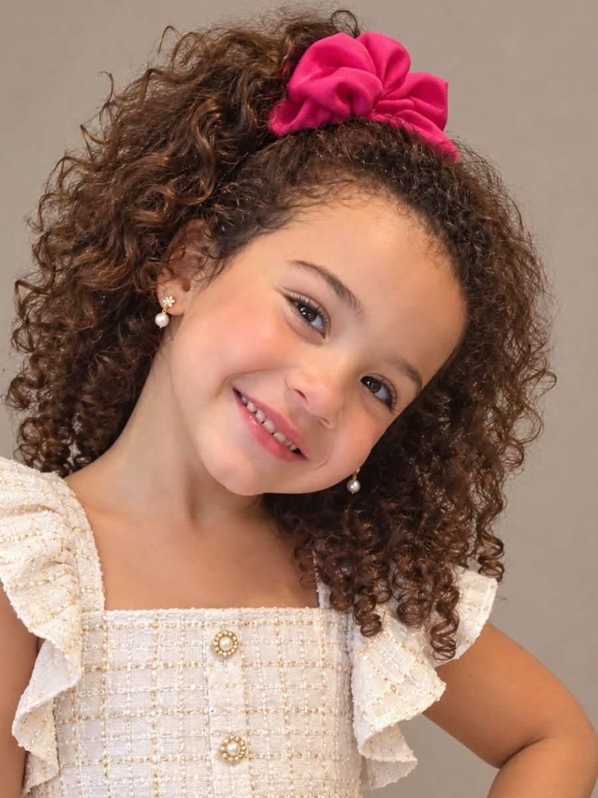

← Voltar ao site← Retour au site← Back to the site
The Crossing TimeThe Crossing TimeThe Crossing Time
Nossa equipeNotre équipeOur team
As pessoas que fazem a The Crossing Time todos os dias, em Paris e no Brasil: a redação, que apura e escreve as matérias, grava os vídeos e cuida das imagens e das redes, e os colunistas, especialistas que assinam as colunas. A direção da revista é apresentada em Nossa direção.Les personnes qui font The Crossing Time chaque jour, à Paris et au Brésil : la rédaction, qui vérifie et écrit les articles, enregistre les vidéos et s’occupe des images et des réseaux, et les chroniqueurs, des spécialistes qui signent les chroniques. La direction de la revue est présentée dans Notre direction.The people who make The Crossing Time every day, in Paris and in Brazil: the newsroom, which researches and writes the articles, records the videos and looks after visuals and social media, and the columnists, specialists who sign the columns. The magazine’s leadership is presented in Our leadership.
RedaçãoRédactionNewsroom


ColunistasChroniqueursColumnists
Quer colaborar?Envie de collaborer ?Want to contribute?
A The Crossing Time analisa todas as propostas de matéria e de colaboração antes de publicar. Escreva para redaction@thecrossingtime.com.The Crossing Time examine toutes les propositions d’article et de collaboration avant publication. Écrivez à redaction@thecrossingtime.com.The Crossing Time reviews every article and collaboration proposal before publishing. Write to redaction@thecrossingtime.com.